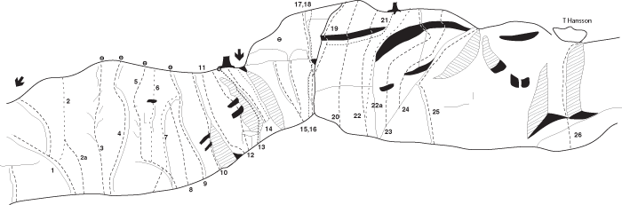

Hallstaberget
Lat: 59.20902
Long: 17.73593
[[Bild:Hallstaberget_dubbeltaket.jpg|thumb|right|400px|Okända klättrare förbereder sig för att klättra Dubbeltaket, 5-. Till vänster i bild förstår man varför Knäjammet heter som den heter. Foto:
Per Lindh
]]
Allmänt
Hallstaberget är en liten brant klippa som ligger ca 2 km norr om Rönninge station, strax söder om motorvägen. En lättillgänglig klippa för lite eftermiddagsklättring. Ca 15 m hög, och på sina ställen brant och dramatisk. Leder i registret från 3 till 9, med tyngdpunkten omkring 6. Under 2008 har berget fått en renässans efter en översyn av Bultkommittén m fl och det finns nu toppankare på flera av bergets "klassiker". Även några nyturer har gjorts.
Beskrivning
Klippan består av relativt mossfria ytor med sprickor och blockkonstellationer, och ytorna ger ett "ungt" intryck. Berget är utmärkt på kartan som fornborg, rösen finns uppe på "mitten" av berget.
Trevliga leder är Catwalk 6, Dubbeltaket 5 men både hårdare och lättare leder finns. Lederna är upp till ca 15 m. Hälften av lederna går det bra att arrangera toppankare på, för den som har gott om slingor och karbiner. Totalt finns ca 25 leder.
Viss varning för ett stort (löst?) block på
Diretisseman 4+
.
Kan besiktas från
Den enda riktiga leden 3
. Dessa två leder är diedrar ganska mitt på klippan. 2008-06-15 lossnade ett större block ur diedern på El Solo. 2008-08-16 lossnade ett mindre block på kruxet på Catwalk. Tyvärr är ju berget lite löst, och det är ofta ganska stora block som det handlar om.
Klippan kallas även såväl
Korpberget
som
Kulberget
, men Hallstaberget är vanligast förekommande, och minst förväxlingsbart i klättersammanhang.
Vägbeskrivning
<div style="width: 505; float: right; margin-left: 10px; padding: 3px; border: solid 1px #cccccc;">
<googlemap lat="59.209732" lon="17.749786" zoom="14" width=500 height=300 type="map" controls="small">
59.20902,17.73593,
Hallstaberget
</googlemap>
</div>
<div class="noprint" style="float: right; margin-left: 10px;">
<slresa>
titel=Hallstaberget
lat=17735930
long=59209020
</slresa>
</div>
Sväng av E4 vid avfart för Salem (avfart nr 145), åk till höger om du kommer söderifrån, och tag vänster från själva avfarten om du kommer norrifrån. Åk i riktning mot Salem och Rönninge, passera avtagsväg mot Salem.
Direkt efter avtagsvägen mot Salem finns en liten avtagsväg, Hallstavägen, (grus) till höger istället. Kör in på denna som slingrar sig över lite åkrar, mer eller mindre parallellt med E4/E20. Passera en tunnel (passera, åk inte igenom den) under E4, på det att vägen svänger vänster.
Klippan syns strax på vänster sida om vägen. Visst utrymme för parkering finns på vägkanter, i synnerhet en bit bort i riktning mot skytteklubbens område.
Klippan skymtas f ö även från E4/E20.
Access
OBS!!!
Det finns en skylt som aviserar att endast behöriga fordon får trafikera grusvägen. Den ordningssamme parkerar vid denna skylt och följer resten av vägbeskrivningen till fots. Behörig trafik är möjligen trafik till skjutbanan strax förbi berget, men troligen inte klättertransporter...
Leder

Klippväggen består av en sektion parallellt med grusvägen, i klippans vänsterkant och relativt nära vägen.
- 1
- Cheesewalk
- 4
- Längst rampen till vänster
- 2
- Fornskölden
- 8/8-
- Börjar på rampen men viker av på den släta väggen något till höger. Fyra borrbultar.
- 2a
- Fornskölden Direkt
- 8
- Gör Fornskölden med start på platta marken och du har tickat denna.
- 3
- Ratwalk
- 6-
- En tydligt lite grov dieder som första tydliga linje från vänster. Denna har tydligen haft ett bättre grepp i början där man ska etablera sig i diedern, men sedan detta försvunnit är leden lite svårare. Står som 5 i gamla stockholmsföraren.
- 4
- Catwalk
- 6
- I princip samma insteg som Ratwalk, fortsätter dock upp mer till höger. Man följer en fin och tydlig spricka, flakkant, till en grund dieder. Fortsätt i den lite uppspruckna grunda diedern. Gott om platser att placera kammar och kilar på, men mer tveksamt om placeringarna håller. Lite lös karaktär.
- 5
- SM i slungboll
- 6
- Delar insteg med Twilight Zone och El Solo. Insteget är ca 3m till höger om Catwalk. Leden följer det uppspruckna diedret precis till höger om Catwalk.
- 6
- Twilight zone
- 6-
- Diedern mellan SM i Slungboll och El Solo. Scrambla inte upp i rännan efter diedret, leden fortsätter över det kanelbullefyllda överhänget. Tung men greppvänlig och tekniskt rolig. Ankare med en(1) bult, komplettera med statiskt rep eller hexa+slingor. Ankaret funkar för El Solo också.
- 7
- El Solo
- 5-
- Tydlig diederformation som går snett uppåt åt höger mot lilla tallen. 20080615 lossnade ett större block ur diedern. Gemensamt enbultsankare med Twilight Zone.
- 8
- Suburbia
- 7-
- Borrbultad förutom det lätta slutet. Stenen till höger, mellan Suburbia och Knäjammet, ingår troligen inte? Starka nypor underlättar starten. Ankare
- 9
- Knäjammet
- 5
- Tydlig spricka, perfekt för att jamma in både det ena och andra. Gemensamt ankare med Suburbia
- 12
- Dubbeltaket
- 5
- Lednamnet säger en del och det är en ganska gymnastisk led. Långa armar kan vara till glädje, möjligen även korta ben... Leden är dock kort, och det går också bra att toppa från en tall och lite backupsprickor. Håll gärna koll på det flak som sticker ut från det undre takets vänsterkant. Flaket är inte helt fast, och har möjligen rört sig lite på senare år.
- 13
- Gon
- 7a
- Betydligt hårdare och finare än en första anblick låter påskina.
- 14
- Crap
- 4
- Leden på vägen t v om diedern. I diedern går en upp- och nedstigningsled med ankare i en tall.
- 15
- Kapillärjammet
- 5-
- Följ den tunna sprickan till hyllan med avsteg till vänster och gemensamt ankare med Crap. Går att förlänga genom att följa sprickan rakt upp och sedan scrambla ner "bakvägen" till ankaret.Numera sitter det ett ankare på toppen av klippan som kan användas av lederna 14-16, med en lång slinga kan dessa leder topprepas i ankaret.
- 16
- Mjölksyra
- 5-
- Tydlig jamspricka med avsteg till vänster under det överhängande partiet på slutet.
- 17
- Den enda riktiga leden
- 4-
- Startar inne i hörnet, sedan en bit ut till vänster och sen fortsätter upp mellan block, och på vänsterkanten om de block som "hänger" i diedern. Egna, stora säkringar rekommenderas.
- 18
- Blockparty
- 6b+
- Klättra upp för areterna på de två blocken. Två borrbultar och en del eget.
- 19
- Diretissiman
- 4+
- Går till höger om ovan nämnda block. Ett block (typ kyl/frys) hänger på ett sätt som inte känns förtroendeingivande. Detta kan knappast passeras utan beröring längs ''Diretisseman''. Det naturliga är snarare att man hänger rätt hårt i det.
- 21
- Donnez-moi un jeuteur de flamme
- 7
-
- 22
- Mögelmörkret
- 6+
- Följer den skarpa arêten precis t.v. om det stora tydliga överhänget. När arêten viker av till höger så fortsätt rakt upp till det lilla överhänget och runda detta t.h. Rolig och väldigt speciell klättring, rekommenderas. I dagsläget så är det toppning som gäller från ett träd ett par meter in från kanten då det är väldigt bristande säkringsmöjligheter i övrigt.
- 22a
- Blond Ambition
- 8-
- Spektakulär klättring på den överhängande arêten till höger om Mögelmörkret. Starta under taket, sen ut på på arêten och följ den hela vägen till toppen. Gymnastiskt!
- 25
- Blöta steg i mörkret
- 3
-
- 27
- Häxan Surtant
- 6b+
- Häxan Surtant är världens suraste och elakaste häxa. Starta på den lilla arêten under Elfenbenstornet. Följ kanten åt höger och vik av upp på den stora arêten via överhänget. Topprep funkar med en quickdraw i en av bultarna ovan överhänget för att hamna rätt och slippa vänsterswing, men kan ge trädkontakt vid fall. Övre delen ombultad 2009-08-05 för att hålla repet borta från vassa kanter vid fall. 7 bultar + ankare.
- 28
- Bileden
- 3
- Startar från den stora hyllan där bl.a. led 14 och nedstigningsleden toppar ut. Följer ett tydligt hörn längst in på hyllan. Dåligt säkrad men fin topprepsled för nybörjare på fast och fin klippa. Ankare görs i tallen vid toppen av leden.
Kategori:Kvällsol
Kategori:Anmarsch 0-5 min
Kategori:Stockholm
Kategori:Västra Södertörn